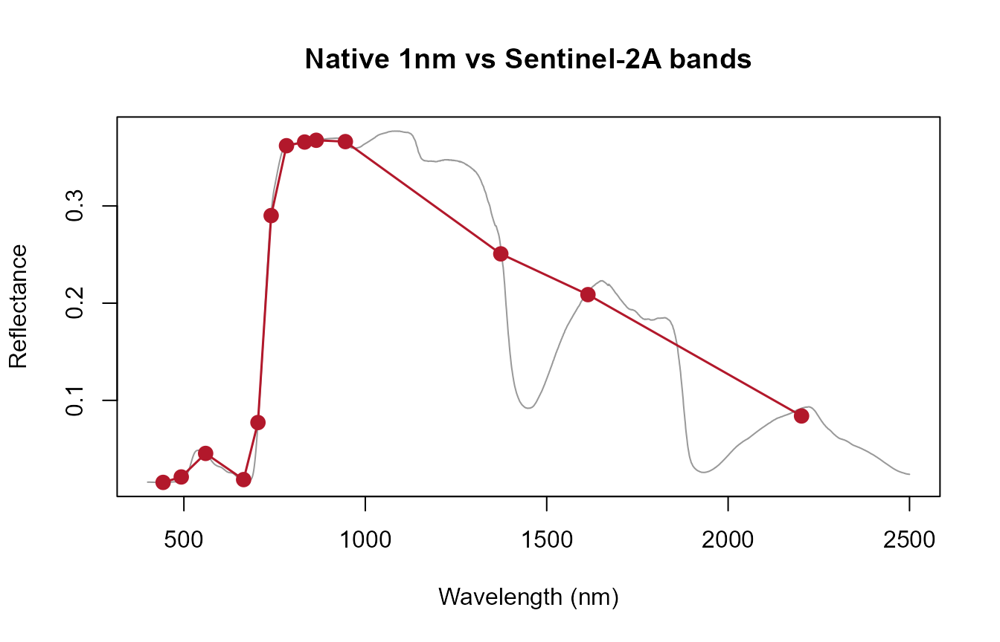
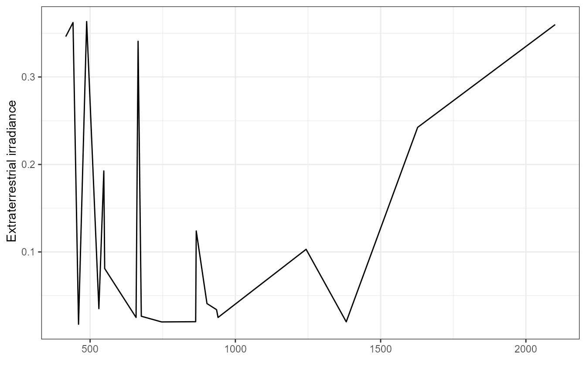

07. From RTM Spectra to Satellite Observations: Sensor Convolution
07-sensor-convolution.Rmd
library(ToolsRTM)Every simulation so far stayed at native 1nm resolution (2101 or 2001 points, Tutorial 02). A real sensor never measures that – it integrates incoming light over each band’s spectral response function (SRF), giving far fewer, wider bands. This page converts a native simulation into what a real sensor would actually report.
row <- data.frame(
LAI = 3, hspot = 0.01, LIDFa = -0.35, LIDFb = -0.15, TypeLidf = 1,
tts = 30, tto = 0, psi = 0,
N = 1.5, Cab = 40, Car = 8, Anth = 2, Cbrown = 0, EWT = 0.009, LMA = 0.009, alpha = 40
)
rsoil <- 0.5 * dataSpec_PDB[, 11] + 0.5 * dataSpec_PDB[, 12]
sail <- foursail(inputLUT = row, rsoil = rsoil, LeafModel = "PROSPECT-D")
reflectance <- Compute_BRF(rdot = sail$rdot, rsot = sail$rsot, tts = row$tts, data.light = dataSpec_PDB)Three convolution functions, one for each kind of sensor data
| Function | What it needs | Sensors covered |
|---|---|---|
get.spectral.convolution.srf() |
A real, MEASURED per-nm SRF, no atmospheric-correction coefficients | PRISMA, Sentinel-2A, Sentinel-2B
(srf.prisma/srf.sentinel2a/srf.sentinel2b) |
get.spectral.convolution.rfl() |
A measured SRF bundled together WITH SMAC atmospheric-correction coefficients | Landsat 4/5/7/8, Sentinel-3A/B OLCI, Terra/Aqua MODIS |
get.spectral.convolution.gaussian() |
No measured SRF at all – only nominal band characteristics (center + FWHM, or center + edges), approximated as Gaussian | EnMAP, ALI, Hyperion, MODIS (19-band nominal), Quickbird, RapidEye,
WorldView-2/3/4, and any sensor/camera you supply
centers/fwhm for yourself |
Only sensors actually bundled/supported are listed above – see
unique(ToolsRTM::sensor.characteristics$Sensor) for the
full nominal- characteristics list behind the Gaussian path.
1. Measured SRF: Sentinel-2A
band_values <- get.spectral.convolution.srf(
df = data.frame(wave = dataSpec_PDB[, 1], rfl = reflectance),
srf = ToolsRTM::srf.sentinel2a)
print(band_values)
#> band wl fwhm RFL
#> 1 1 442.6950 19 0.01561206
#> 2 2 492.7152 64 0.02121222
#> 3 3 559.8491 34 0.04542619
#> 4 4 664.6218 29 0.01849372
#> 5 5 704.1149 13 0.07719207
#> 6 6 740.4918 13 0.29011048
#> 7 7 782.7529 18 0.36197427
#> 8 8 832.7904 104 0.36575364
#> 9 9 864.7108 19 0.36756865
#> 10 10 945.0545 18 0.36618153
#> 11 11 1373.4555 29 0.25070480
#> 12 12 1613.6805 89 0.20878414
#> 13 13 2202.3678 173 0.08395820
plot(dataSpec_PDB[, 1], reflectance, type = "l", col = "grey60",
xlab = "Wavelength (nm)", ylab = "Reflectance", main = "Native 1nm vs Sentinel-2A bands")
points(band_values$wl, band_values$RFL, col = "#B2182B", pch = 19, cex = 1.3)
lines(band_values$wl, band_values$RFL, col = "#B2182B", lwd = 1.5)
2. SMAC-bundled SRF: MODIS
modis_bands <- get.spectral.convolution.rfl(
df = data.frame(wave = dataSpec_PDB[, 1], rfl = reflectance),
sensor.i = ToolsRTM::TerraAqua.MODIS)
A real, documented gotcha with this path: for
MODIS/Landsat/Sentinel-3 OLCI specifically, the bundled SRF tables are
column-ordered by natural band number rather than by true center
wavelength – confirmed once, fixed at the package source (see
NEWS/package changelog for the R bug-fix history); using
get.spectral.convolution.rfl()’s own band-order output (as
above) rather than re-deriving indices by hand avoids re- hitting
it.
3. No measured SRF: Gaussian approximation
enmap_bands <- get.spectral.convolution.gaussian(
df = data.frame(wave = dataSpec_PDB[, 1], rfl = reflectance), sensor.i = "EnMAP")
cat("EnMAP bands:", nrow(enmap_bands), "\n")
#> EnMAP bands: 242Worked example: your own sensor or camera
own_centers <- c(444, 475, 502, 531, 550, 560, 570, 650, 668, 678, 705, 717, 740, 754, 842)
own_fwhm <- c(28, 32, 18, 14, 12, 27, 14, 16, 14, 14, 10, 12, 18, 10, 57)
df <- data.frame(wave = dataSpec_PDB[, 1], rfl = reflectance)
own_bands <- get.spectral.convolution.gaussian(df, centers = own_centers, fwhm = own_fwhm)
# Centers-only (e.g. copied from an ENVI header's "wavelength = {...}" block,
# no separate "fwhm = {...}" block) -- FWHM estimated from band spacing instead:
headwall_centers <- c(398.0166, 400.247, 402.4774, 404.7078, 406.9382) # (full header has 272)
headwall_bands <- get.spectral.convolution.gaussian(df, centers = headwall_centers)
own_bands
#> band wl fwhm RFL
#> 1 1 444 28 0.01567923
#> 2 2 475 32 0.01650100
#> 3 3 502 18 0.02098656
#> 4 4 531 14 0.04553117
#> 5 5 550 12 0.04843935
#> 6 6 560 27 0.04530615
#> 7 7 570 14 0.04167810
#> 8 8 650 16 0.02089493
#> 9 9 668 14 0.01787229
#> 10 10 678 14 0.01801478
#> 11 11 705 10 0.08189282
#> 12 12 717 12 0.15184254
#> 13 13 740 18 0.28362162
#> 14 14 754 10 0.32738876
#> 15 15 842 57 0.36633320Same function handles all three cases (a full center+FWHM calibration sheet, centers-only, or a bundled sensor name) because none of them have a measured SRF to fall back on, unlike Sections 1-2 above.
Which one should you use?
Do you have a measured SRF?
|
+-- Yes, plain per-band SRF (no SMAC coeffs)
| |
| v
| get.spectral.convolution.srf()
| (PRISMA, Sentinel-2A/2B)
|
+-- Yes, bundled with SMAC atmospheric coefficients
| |
| v
| get.spectral.convolution.rfl()
| (Landsat 4/5/7/8, Sentinel-3A/B OLCI, MODIS)
|
+-- No measured SRF -- only nominal center/FWHM,
or your own camera
|
v
get.spectral.convolution.gaussian()What’s next
- Tutorial 08 – computing vegetation indices from convolved sensor-band reflectance (and clarifying which index function to use, tabular vs. spatial, full set vs. ML-curated).
- Tutorial 11 – training an inversion model on convolved, sensor-realistic reflectance instead of the native spectrum.